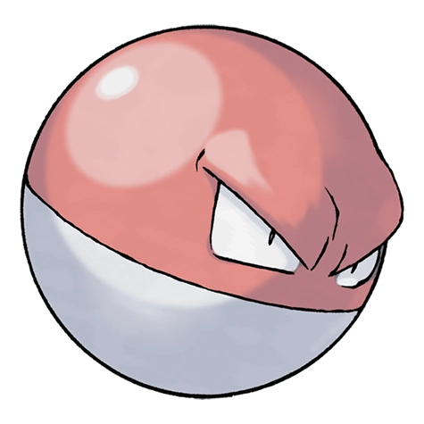

Назад
Волторб

Волторб — Покемон 1 поколения под номером 100 в Покедекс Обитает он в регионе Kanto и относится к Электрическомутипу. Волторб впервые был замечен в компании по производству покеболлов. Связь между этим фактом и схожестью Покемона с покеболлом остаётся загадкой.
Тип:
Электрический
Эволюция
# 100 Волторб
=>
# 101 Электрод